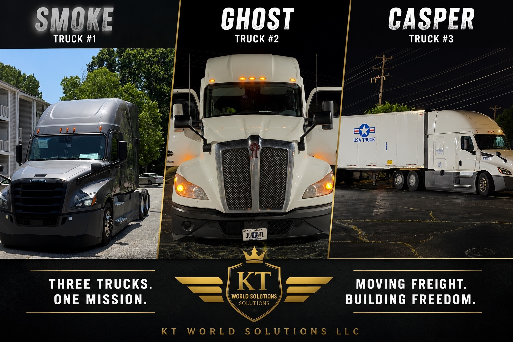
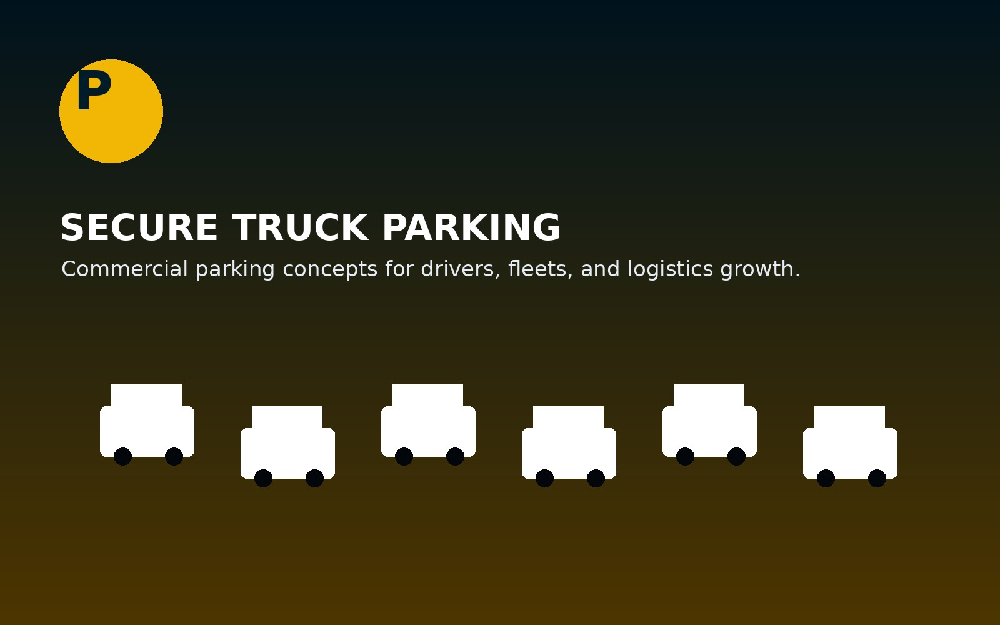
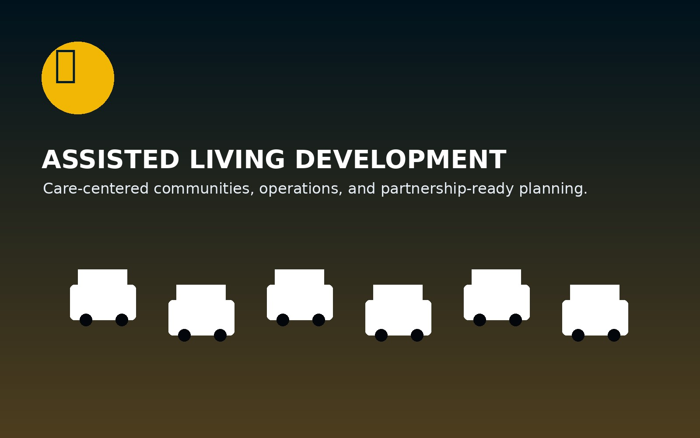

Parent Company · Multi-Division Operations
Building Reliable Services Across The Southeast.
KT World Solutions LLC is a diversified operations company providing transportation, medical courier, truck parking, and assisted living development services built on reliability, safety, and growth.
Now Hiring
Join the KT World Solutions team.
We are building across transportation, courier services, administration, logistics, marketing, and care development.
Explore Our Divisions
Four divisions. One standard: reliability.
KT World Solutions LLC operates across transportation, healthcare logistics, truck parking infrastructure, and assisted living development throughout North Carolina and the Southeast.
Medical Courier Services
Secure courier support for labs, pharmacies, healthcare partners, specimens, supplies, and time-sensitive deliveries.
Learn More →
JLV&Son Logistics
Regional trucking and freight support operated under KT World Solutions LLC.
Regional trucking and freight support built around safety, communication, professional execution, and reliable service.
Learn More →
Commercial Truck Parking
Parking concepts and infrastructure support for commercial drivers, owner-operators, fleets, and logistics partners.
Learn More →
Assisted Living Development
Senior-care development support focused on planning, operations, staffing strategy, and dependable care environments.
Learn More →Built From Real Operations
Dependable support with a hands-on owner behind the work.
KT World Solutions is designed to serve practical needs across logistics, healthcare support, infrastructure, and community development. Every division is built with accountability, communication, and professional execution at the center.